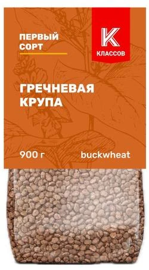
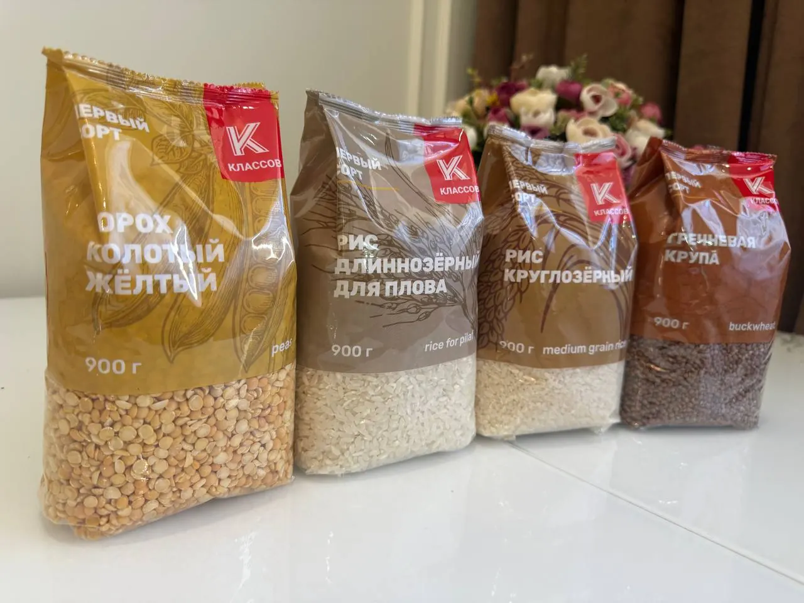
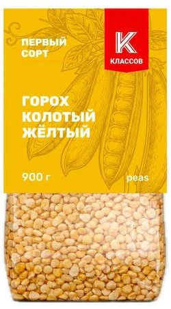
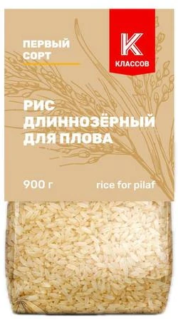
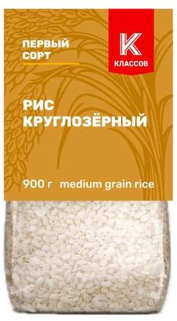
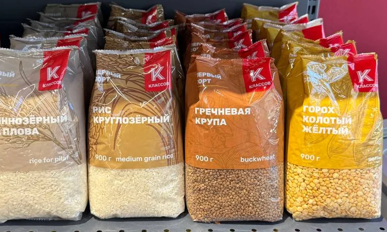

Оптовые поставки · Ставрополь
Крупа первого сорта в пачке 900 г
Гречка, горох и два вида риса под маркой «Классов». Пачка с окошком: покупатель видит крупу до покупки. Работаем с магазинами и дистрибьюторами.
- Первый сорт
- Без ГМО
- Хранение 18 месяцев

Ассортимент
Четыре позиции, одна фасовка
Все пачки по 900 г, срок годности 18 месяцев. Пищевая ценность указана на 100 г продукта, по данным с упаковки.


Первый сорт
Рис длиннозёрный для плова
Пищевая ценность и способ приготовления: уточняем.
Запросить прайс
Почему «Классов»
Что указано на каждой пачке
Первый сорт
Класс продукта указан на лицевой стороне упаковки.
Без ГМО
На этикетке: «не содержит ГМО».
По ГОСТ
Для каждой крупы на упаковке указан свой ГОСТ.
18 месяцев
Срок годности. Пачка 900 г с прозрачным окошком, крупа видна.

На полке
Заметна среди остальных
Каждой крупе свой цвет упаковки: гречка терракотовая, горох жёлтый, рис бежевый и золотистый. Красная плашка с буквой «К» одинакова на всех, поэтому бренд находят на полке сразу.
Опт
Как начать работать
Напишите или позвоните
Скажите, какие позиции интересны и какой объём нужен.
Получите прайс
Пришлём актуальные цены. Они зависят от объёма, поэтому на сайте их нет.
Согласуем поставку
Обсудим количество, сроки и доставку.
Контакты
Запросить прайс
Напишите в удобный мессенджер или позвоните.
ООО «КЛАССОВ»
355008, Ставропольский край,
г. Ставрополь, ул. Селекционная, д. 1
ИНН / КПП: 2634116792 / 263401001
355008, Ставропольский край,
г. Ставрополь, ул. Селекционная, д. 1
ИНН / КПП: 2634116792 / 263401001